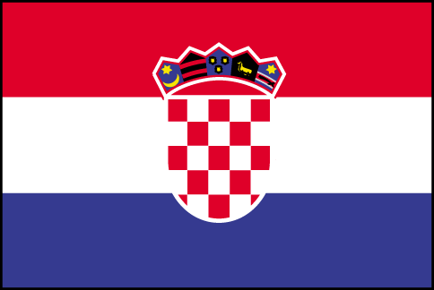

Prof. Mladen Pavičić
Pročelnik Katedre za fiziku
Građevinskog fakulteta
Sveučilišta u Zagrebu
UPRAVI ZA ZNANOST
Ministarstva znanosti, obrazovanja i športa Republike Hrvatske
Žalba na tretman
projekta Mladen
Pavičić, Kvantno računanje: paralelnost i
vizualizacija (1184) od strane Prosudbene skupine i
prijedlog izdvojenog procesiranja revidirane
verzije projekta (3380) KLASA: 402-07/06-08/00115
BROJ: 533-08-07-0004
Zagreb, 5.4.2007.
Cijenjeni,
U prilogu svog pisma od 15.1.07., državni tajnik prof. dr. sc. Dražen
Vikić Topić nam je poslao recenzije i mišljenje
prosudbene skupine za naš projekt
Kvantno računanje: paralelnost i vizualizacija (broj prijave 1184)
i predložio nam da uzimajući u obzir mišljenja recenzenata
i prosudbene skupine prijavimo revidirani projekt.
Mi smo prihvatili prijedlog i prijavili revidirani projekt pod
brojem 3380. U njemu smo uvažili sve
primjedbe recenzenata ili razjasnili točke za koje su recenzenti
smatrali da su nejasne ili nedovoljno objašnjenje. Time smo također
uvažili točke I, II, V i VI prosudbene skupine u kojima ona
u potpunosti prihvaća ocjenu recenzenata.
U točkama V i VI (kompetentnost voditelja projekta i
kompetentnost suradnika na projektu) prosudbena skupina
"korigira" prosječne ocjene
recenzenata
4,83="znanstveno postignuće na svjetskoj razini" i
3,30="značajno znanstveno postignuće na
domaćoj razini" sa
"faktorom znanstvene produkcije i utjecaja"
na
2="ispod temeljnih znanstvenih standarda",
odbija prijedloge
oba recenzenta da se projekt prihvati i
odbija projekt, te misli da bismo se
"mogli usredotočiti na rad na drugim projektima na kojima su
prijavljeni kao suradnici". Budući da nema preklapanja našeg sa
spomenutim projektima, ovo posljednje bi značilo ubijanje jedinog
projekta u Hrvatskoj koji se bavi teorijom
kvantnih kompjutera. (Njihovu favoriziranost
u svijetu predočuje 53.200.000
stranica koje Google daje kad upišete quantum computer,
kao i milijarde dolara investiranih
u to polje godišnje.) Kako pokazuje priložena analiza u interesu
je svjetske i hrvatske znanosti da se to ne dogodi.
Prosudbena skupina nije specificirala što bi "znanstvena
produkcija i utjecaj" trebali biti, no, mi smo, s obzirom
na e-mailove dva člana prosudbene skupine, pretpostavili
da su to citiranja bez samocitiranja i Impact Factor i
broj Current Contents članaka po koautoru u skladu s
međunarodnim bibliometrijskim standardima. Iako smatramo
da je apsolutno neprihvatljivo da se u kreiranju znanstvene
politike jedne države mišljenja kompetentnih stručnjaka
zamijenjuju administrativnim faktorima, mi smo ipak
izračunali te faktore za našu grupu
i za voditelje svih 72 projekta, čije je financiranje ovo
Ministarstvo odobrilo na prijedlog prosudbene skupine,
i usporedili ih.
Dobili smo da je - u posljednjem projektnom periodu (2002-06.) - po broju
Current Contents članaka voditelj
(M. Pavicic) bolji od 41 voditelja (od 72 voditelja
prihvaćenih projekata),
a suradnici da su bolji od 49 voditelja. Po Impact
Factor-ima voditelj je bolji od 29, a
suradnici bolji od 18 voditelja.
I po citiranosti, voditelj je bolji od 26, a
suradnici su bolji čak od 51 voditelja prihvaćenih
projekata. Detalji su dani u priloženim
dokumentima iz kojih je također vidljivo da
navedni faktori primijenjeni na 72 voditelja prihvaćenih
projekata dovode do potpunog ispremješavanja
redoslijeda projekata kojeg je sama prosudbena skupina predložila
ovom Ministarstvu.
Dakle, ne samo da proizlazi da prosudbena
skupina nije uvažila ocjene i preporuke recenzenata,
ni brojne dostupne podatke o visokoj znanstvenoj
kvaliteti voditelja i suradnika, i da je uvela kriterije
po kojima je djelovala samovoljno i bez konsenzusa znanstvene
zajednice i protivno proklamiranoj politici ovog
Ministarstva o ulozi recenzenata, i da nije objavila
kriterije barem jedan projektni period unaprijed nego ad
hoc tijekom evaluacijske procedure, već
izgleda da nije primjenila ni jednake kriterije na naš i
ostale projekte (v. priloge 4, 5 i 6) i to bi trebalo zabrinuti
i uznemiriti znanstvenu zajednicu, ovo Ministarstvo i javnost.
Zbog svega toga, a rukovodeći se detaljnom analizom koju
smo proveli, koju prilažemo i koja je dobavljiva na
hrvatskom i engleskom na slijedećoj web adresi:
http://m3k.grad.hr/pavicic/projekt/recenzija/
molimo:
1. da se revidirana verzija (3380) našeg projekta prvo
pošalje istim recenzentima koji su ocjenjivali prvobitnu
verziju (1184);
2. da se nakon primitka mišljenja recenzenata
ne dozvoli da prosudbena skupina mijenja ocjene koje
su dali recenzenti;
3. da se naš projekt prema ocjenama recenzenata
rangira među 72 već prihvaćena projekta - kako bi se
kompenzirala šteta nanesena projektu neprimjerenom intervencijom
prosudbene skupine u mišljenje i prijedlog recenzenata;
4. da se odobri trajanje projekta od 5 godina i pridruživanje
programu "Distribuirana obrada i znanstvena vizualizacija podataka"
prof. dr. sc. Karolja Skale kao što je prvobitno bilo prijavljeno u okviru
verzije 1184 - kako bi se kompenzirala šteta nanesena projektu
neprimjerenom intervencijom prosudbene skupine u mišljenje i
prijedlog recenzenata;
5. da se po primitku konačne ocjene recenzenata
odobri naknadno traženje opreme za projekt - kako bi se
kompenzirala šteta nanesena projektu neprimjerenom intervencijom
prosudbene skupine u mišljenje i prijedlog recenzenata;
6. da se već sad, na početku projektnog perioda definira
način ocjenjivanja projekata tijekom perioda i kriteriji za
dodjelu novih projekata nakon isteka sadašnjih.
Mladen Pavičić
Voditelj projekta
Prilozi:
1. Usporedna analiza tretmana projekta od strane prosudbene
skupine
2. Recenzije prijedloga projekta Kvantno računanje:
paralelnost i vizualizacija
3. Dopis prosudbene skupine Ministarstvu kojim odbija projekt
4. Impact Factor rang lista voditelja 72 od
odobrena projekta iz fizike i našeg voditelja
5. Current Contents rang lista voditelja 72
odobrena projekta iz fizike i našeg voditelja
6. Rang lista citiranosti voditelja 72 od
odobrena projekta iz fizike i našeg voditelja
7. Kopija pisma državnog tajnika prof. dr. sc. Dražena Vikić Topića
od 15.1.07.